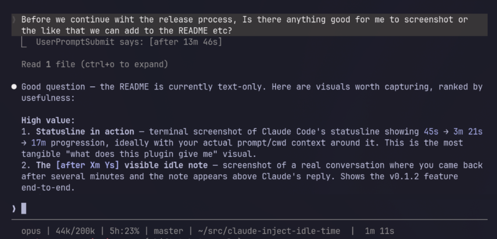

you
okay where were we?
· [after 5m 2s] ·
Tell the model how long you've been gone.
Injects a hidden [timing] block into every prompt —
local time with UTC offset, seconds idle since the last reply, duration of the
previous turn. The model sees it. You don't.
/plugin marketplace add pleasedodisturb/chronoclaude
/plugin install chronoclaude@chronoclaude

Everything in your transcript stays yours. The model gets one small block on top.
[timing] time=2026-04-17T16:04:19+10:00 idle_for=302.0s last_turn=88.2s [/timing] okay where were we?
Fresh sessions omit idle_for and last_turn until the first
turn completes. No prompts are modified in your chat history.
Injects the hidden [timing] block on every prompt. Also prints a visible [after Xm Ys] note in the TUI when you return after >10s idle.
Persists per-session timing state to disk so the next turn can compute idle_for and last_turn.
Resets the idle timer when Claude Code compacts context, so the counter reflects the compaction event rather than the last pre-compact reply.
A composable fragment that prints elapsed time since the model's last reply
(45s, 3m 21s, 17m, 1h 23m).
Drop into your existing statusline script — it doesn't replace one.
/chronoclaude-setup
If you switch models mid-session the fragment prints --- — the original timer resumes if you switch back.